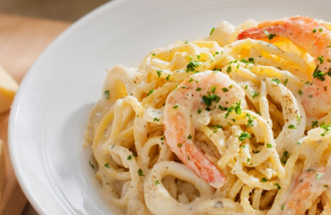

Seafood Carbonara Spaghetti

Preparation time: 20mins
Ingredients
- 1 tsp Salt
- 450 g Spaghetti
- 4 tbsp Olive oil
- 100 g Yellow onion, chopped
- 2 cloves Garlic, chopped
- 1/4 tsp Dried oregano
- 20 nos Prawn, cleaned
- 6 nos Calamari, remove skin and cut into rings
- 1 cup Cooking cream
- 1 cup Fresh milk
- 50 g Parmesan cheese, grated
- 2 tsp AJI-SHIO® Flavoured Black Pepper
- 1 1/2 tsp Salt
- 3 nos Egg yolks
- Some Parsley, chopped
Instructions
-
Boil the water with salt. Add in spaghetti and let it boil for 15
minutes, drained.
- Heat olive oil. Stir-fry the yellow onion, garlic and oregano.
-
Add in prawn and calamari, sauté it for a while. Pour in cooking cream
and fresh milk. Let it simmer.
- Add in parmesan cheese and mix well.
-
Add in cooked spaghetti. Season with AJI-SHIO® Flavoured Black Pepper
and salt. Mix well.
- Add in the yolks and mix well.
- Sprinkle the parsley and ready to serve.
Click here to home page